爱是一种力量，一种我们唯一能够感知的，超越时空的事物。
——《星际穿越》
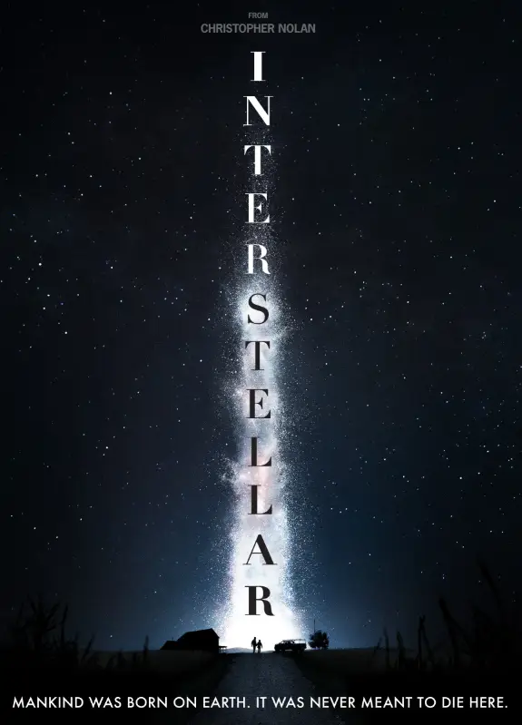
作者：梦旅人⋅吴晏
整编：李大虾
《星际穿越》讲述了一个穿越宇宙拯救人类的故事。
而电影在硬科幻的外壳下，却是关于爱的主题。
在并不遥远的未来，植物枯萎病蔓延，人类面临粮食危机，还有漫天的沙尘暴，地球渐渐衰败……
地球上的人类虽然苟延残喘，但仍在做着最后的抗争。
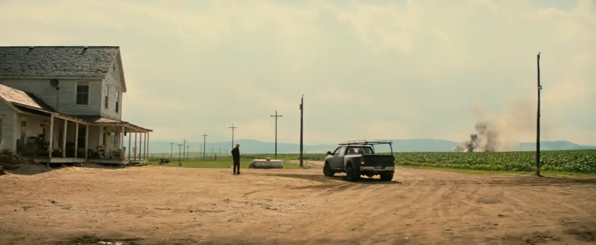
主人公名叫库珀，曾经是一名宇航员，但因为一次飞行事故告别了飞行生涯，成为了一名农民——那个时代最需要的职业。
库珀的妻子已去世，他和岳父，还有儿子和女儿一起相依为命。
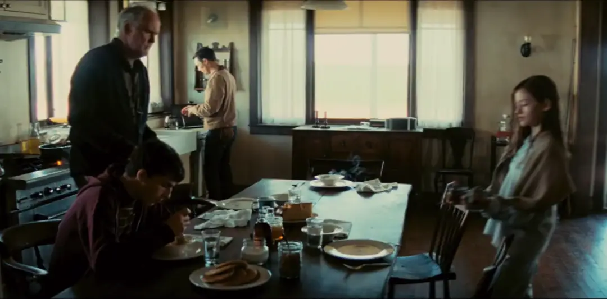
库珀的女儿名叫墨菲，天资聪颖，喜欢科学理论。
她的房间最近里经常出现怪异的现象，她卧室书架上的书总是无缘无故地掉在地上。
墨菲告诉爸爸，房间里有幽灵。
爸爸笑着告诉她，要努力尝试着用科学的视角来解释一些问题。
有一天窗外的沙尘有规则的掉落在地上，形成了一个条码状图案。
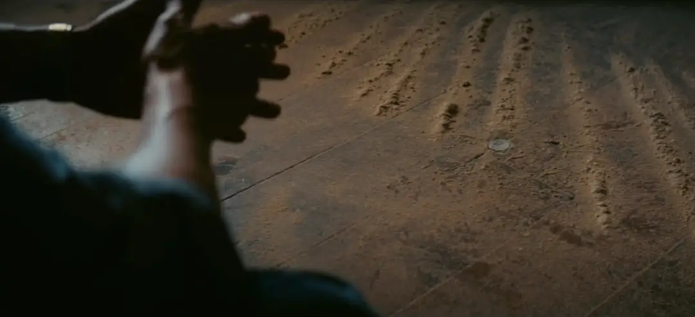
库珀识别出这是二进制数字形式的一个坐标。
于是他带着女儿驾车来到了坐标对应的地点，竟然发现了已经销声匿迹的美国宇航局NASA的秘密基地。
库珀和女儿被一个名叫塔斯的机器人逮捕，然后见到了女科学家布兰德博士，还有她的父亲布兰德教授。
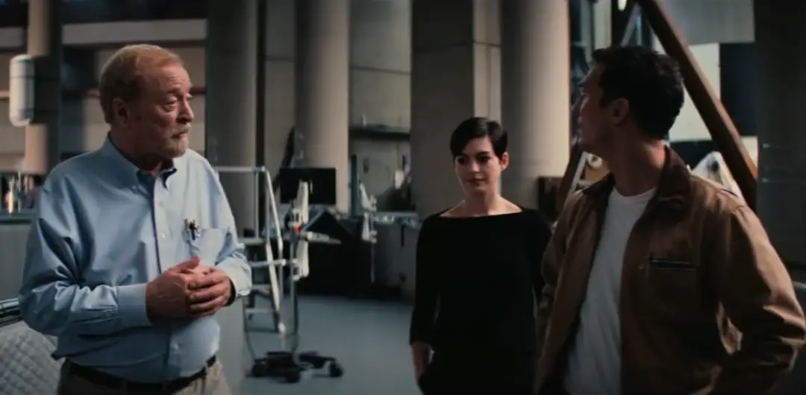
布兰德教授告诉他，NASA以这种方式在秘密进行拯救人类的计划——“拉撒路计划”：建造巨型空间站，带着地球上的人类去宇宙寻找新的家园。
但实现这一计划需要解决2个问题：
一是派遣12艘飞船去找到适合人类生存的星球。
二是解出方程式，得出关键的参数，空间站才能摆脱地球引力进入宇宙。
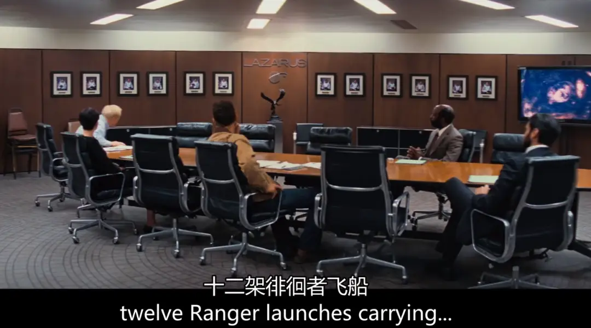
10年之前，他们已经派出了12艘飞船，发现了3颗可能适合人类居住的星球。
现在需要再次派出飞船对这3颗星球进行评估，但已经没有能驾驶飞船的宇航员了。
库珀的来到让他们看到了希望。
他们请求库珀成为“拉撒路计划”的宇航员，但库珀舍不得丢下家人而犹豫不决。
最终，出于对全人类的责任，库珀答应了。
回到家，库珀向父亲和儿子告别，但墨菲却赌气跑进了房间不理库珀。
库珀不顾墨菲的阻拦，和她约定好了回来的时间，毅然离开了。
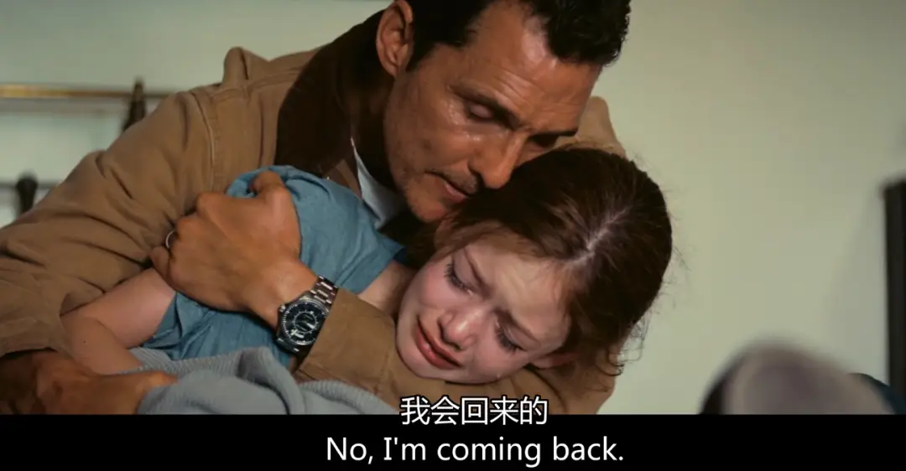
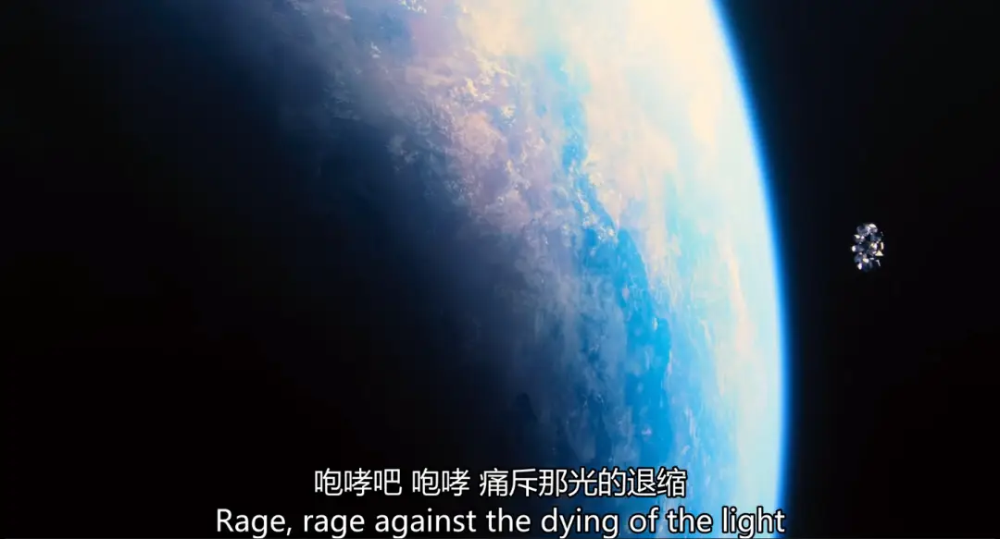
伴随着狄兰·托马斯的《不要温和地走进那个良夜》，转眼间飞船升空，飞向宇宙深处。
滑动下方
查看完整诗歌
▼
《不要温和地走进那良夜》
作者：狄兰·托马斯
该诗是作者写给病危中的父亲的一首诗
表达了对于时间与死亡的恐惧
电影中反复使用这首诗歌
表达了女儿对父亲的不舍
以及将来陷入到无边无际等待中的煎熬
以下为完整诗歌
不要温和地走进那良夜，
老年应当在日暮时燃烧咆哮；
怒斥，怒斥光明的消逝。
虽然智慧的人临终时懂得黑暗有理，
因为他们的话没有迸发出闪电，
他们也并不温和地走进那个良夜。
善良的人，当最后一浪过去，高呼他们脆弱的善行
可能曾会多么光辉地在绿色的海湾里舞蹈，
怒斥，怒斥光明的消逝。
狂暴的人抓住并歌唱过翱翔的太阳，
懂得，但为时太晚，他们使太阳在途中悲伤，
也并不温和地走进那个良夜。
严肃的人，接近死亡，用炫目的视觉看出
失明的眼睛可以像流星一样闪耀欢欣，
怒斥，怒斥光明的消逝。
您啊，我的父亲．在那悲哀的高处．
现在用您的热泪诅咒我，祝福我吧．我求您
不要温和地走进那个良夜。
怒斥，怒斥光明的消逝。
在去往土星的路上，库珀从休眠中醒来，收到了地球上的父亲和儿子发来的视频信息。
但女儿墨菲却一直还在生父亲的气，不肯露面。
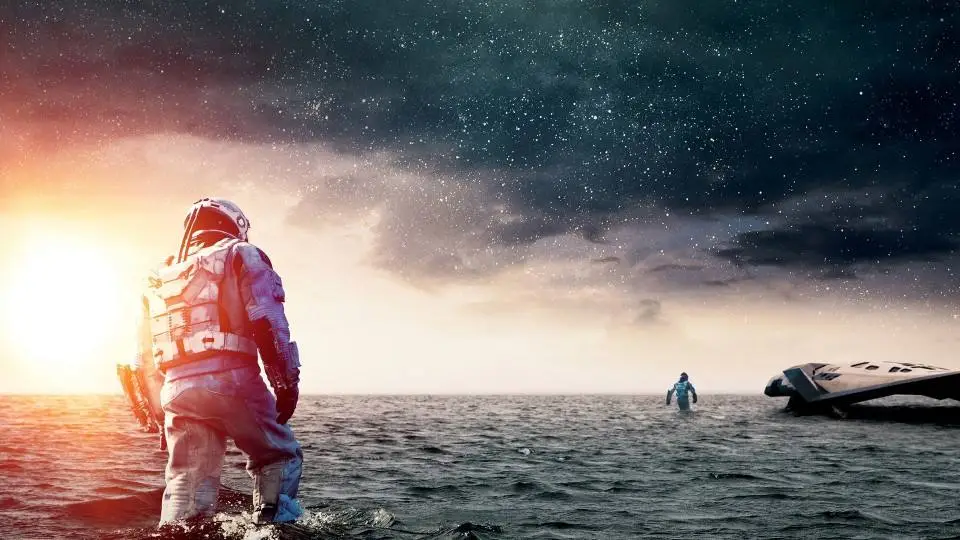
库珀他们的飞船“永恒号”穿越了土星附近的虫洞到达了其他星系，前往第一颗目标星球进行查探。
由于黑洞的引力的作用，这颗星球上的一小时，相当于地球上的七年。
当库珀他们经历了生死的考验从这颗“水星”上再次回到“永恒号”时，发现时间已经过了23年。
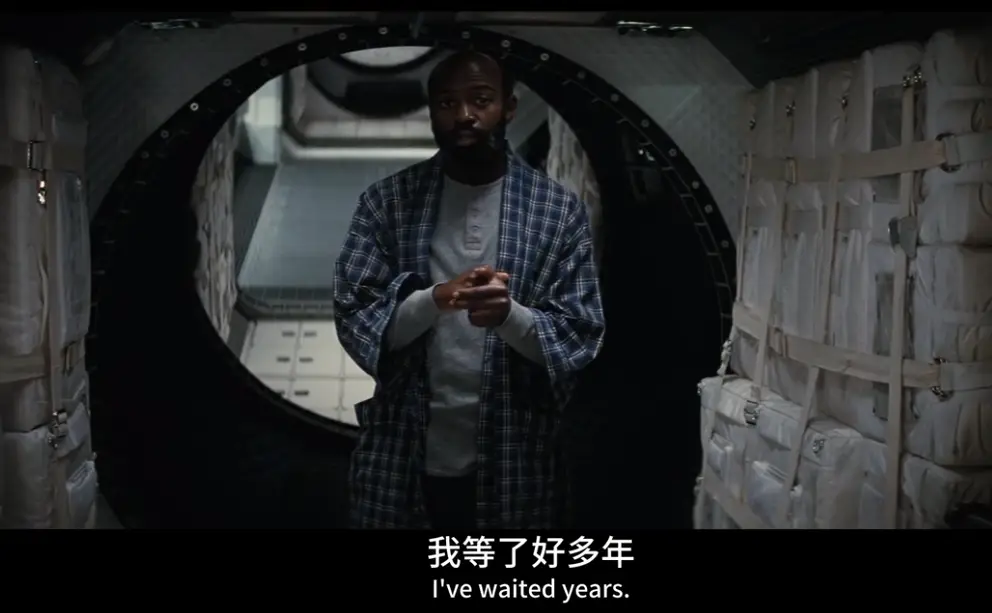
三颗目标星球中的一颗已经排除，还剩下两颗。
一颗数据更好些，另一颗还在持续地发送数据。
但因为燃料不够，只能选择去其中之一。
选择去哪一个，成了一个难题。
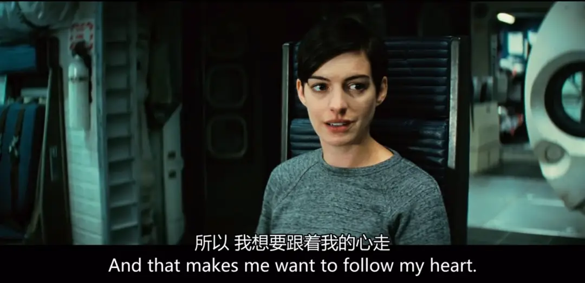
库珀想去一直在发送数据的星球，因为从理性上来说，持续发送数据说明可能性更高。
而布兰德想去数据更好的那个星球，虽然现在没有最新的信息，但她相信是爱的牵引——因为那个星球是她的恋人所去的地方。
但在爱与理性的抉择中，库珀的理性占了上风。
他排除了个人感情的影响因素，继续靠理性来做判断，最终选择了一直在发送信号的星球。
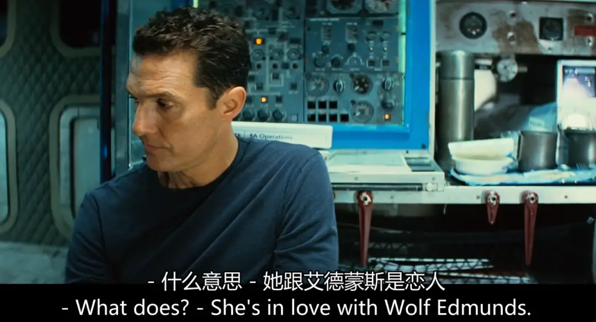
与此同时，地球上的老教授已经到了生命临终的时刻。
他把墨菲叫到身边，对她说出了真相。
原来他早已解出了方程：方程式需要黑洞内的数据才能得出结果，但没有人可以取得黑洞内的数据。
他认为建造巨型空间站带人类离开地球的A计划不可能实现了，所以一开始执行的其实就是B计划。
让宇航员们带着人类的受精卵寻找殖民地。
而A计划只是让宇航员们安心地去执行任务的幌子而已。
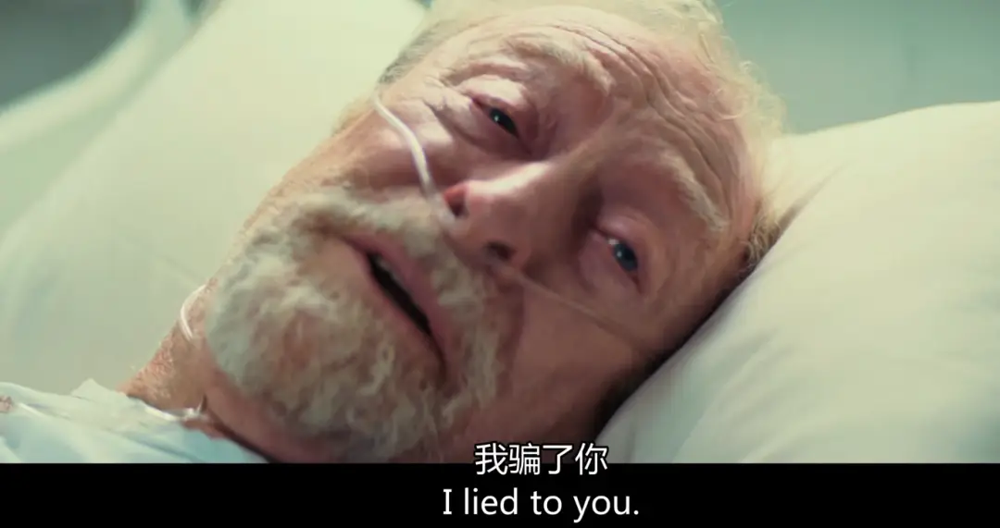
知道了真相，知道了父亲再也回不来，墨菲一度陷入了绝望。
她在视频通讯中对父亲抱怨：“这些全是假的，你把我们扔在地球上，窒息、挨饿。”
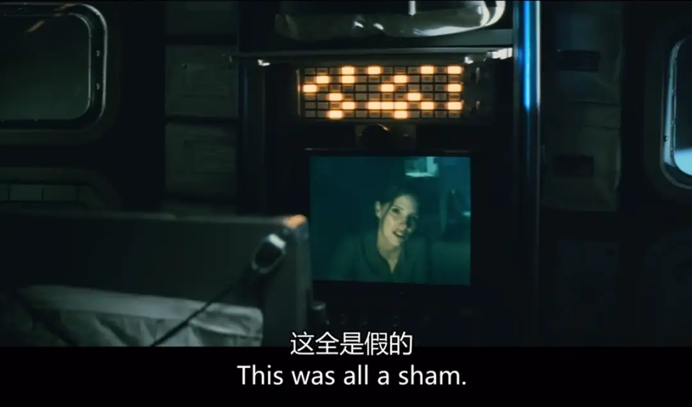
另一边，库珀依靠理性选择的星球最后却是一场人性的骗局，永恒号也因此受损。
库珀终于醒悟过来，剩下的选择就是布兰德的恋人所去的那颗星球了。
库珀想出了一个方案，利用黑洞的引力把飞船拉向它的边界，然后利用引力弹弓效应射向目标星球。
但飞船的燃料即将耗尽，于是库珀把飞行器分离，减轻飞船的重量从而摆脱黑洞的引力。
同时也让机器人塔斯进入黑洞去获取数据。
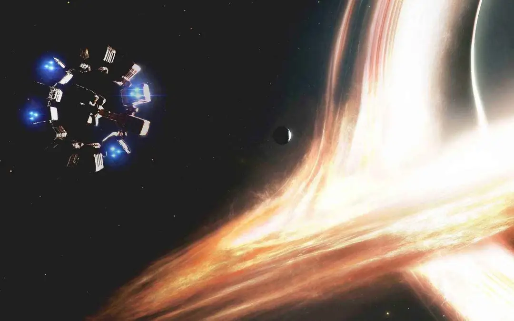
但让布兰德没有想到的是，库珀也把自己所在的飞行器分离，被吸入了黑洞。
一方面是为了减轻飞船的重量让布兰德安全脱身。
另一方面他也不再受理性的束缚，靠着对女儿的爱，愿意进入黑洞一搏。
因为在此前，同伴曾告诉他这个黑洞有温和的奇点，也许可以通过黑洞获取数据。
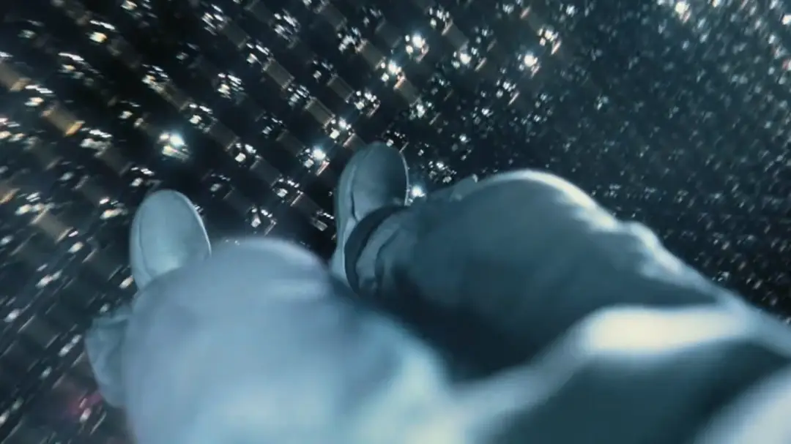
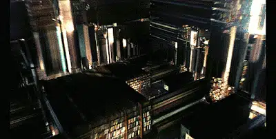
在黑洞里，库珀掉进了一个由无数个立方体组成的五维空间里。
时间，变成了实体。
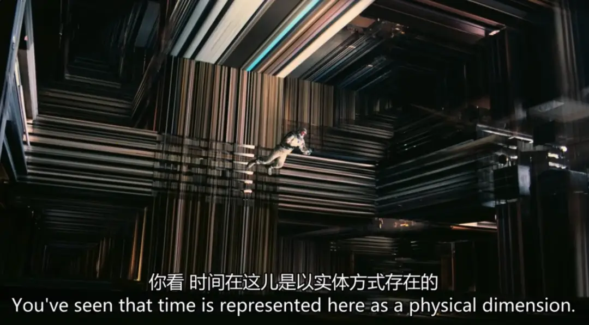
每一个立方体都是不同的时间点上的女儿的房间。
时间，就像一个巨大的图书馆，可以检索到女儿的房间在任意时间点上的状态。
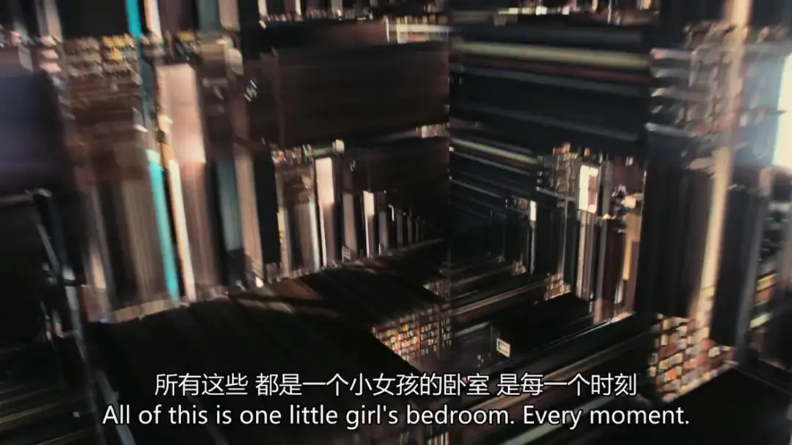
库珀的通讯器响起，原来是机器人塔斯收集到了黑洞中的量子数据，但却无法传出去。
库珀：“怎么沟通？用爱，就像布兰德说的，我与墨菲之间的联系。”
库珀：“把数据转化成手表秒针的运动。”
塔斯：如果她不来拿这块表呢？
库珀：她会的，她会的。
塔斯：你怎么知道？
库珀：因为是我给她的。
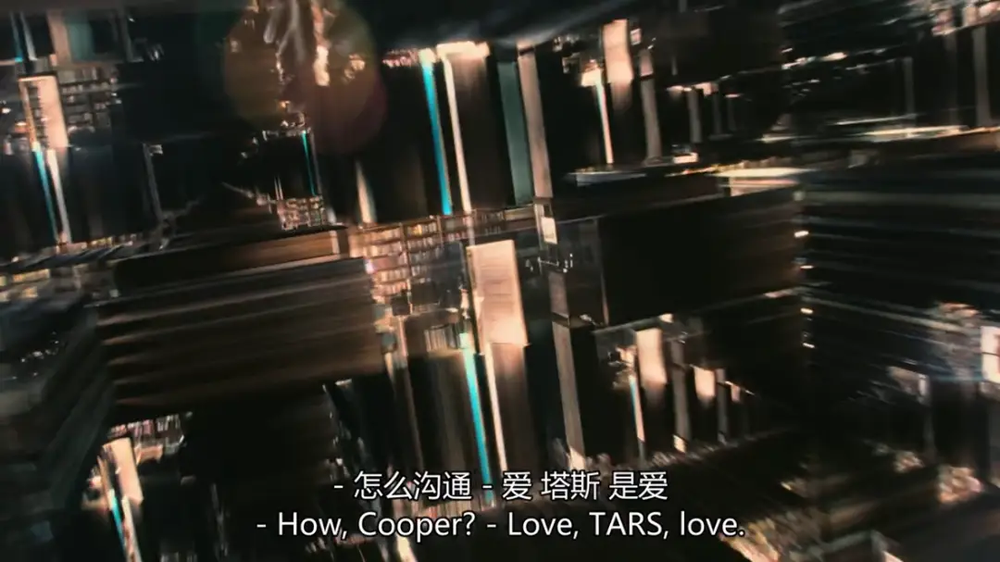
库珀拨动着物体的“世界管线”，就像是拨动着时空的琴弦。
产生出的引力波，把数据传递到了女儿的手表上。
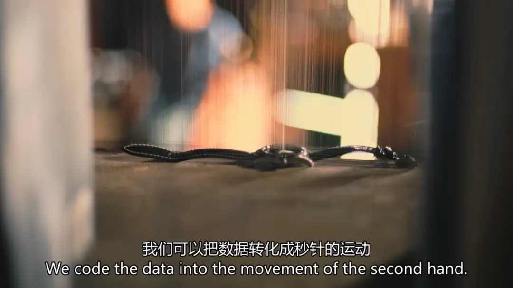
宇宙中只有引力才可以穿越维度，包括时间的维度。
而此时，爱就像引力一样，穿越了时空，连接了库珀和女儿。
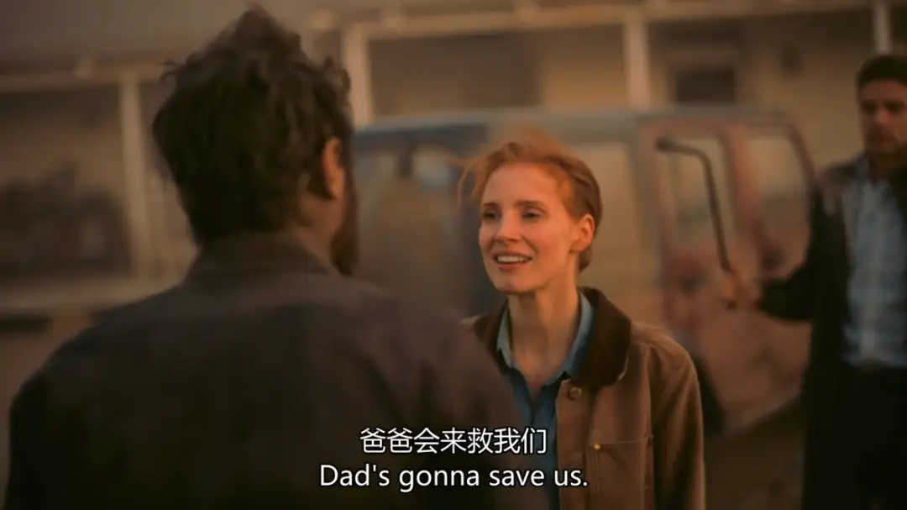
库珀传输完数据后，五维空间消失了。
当他再次醒过来的时候，已经躺在了病床上，时间已经到了几十年之后。
墨菲在收到了他的信息后，解出了方程，人类已经得救，离开了地球，生活在巨大的空间站中，并且还原了地球上的生活状态。
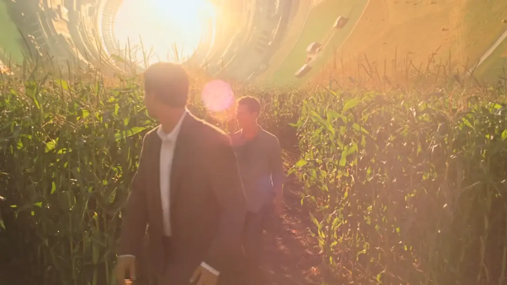
库珀终于见到了女儿，她已经儿孙满堂，也已经到了生命的尽头。
库珀：“我回来了，墨菲。”
墨菲：“我知道你会回来的。”
库珀：“为什么？”
墨菲：“因为你向我保证过。”
库珀因着爱和信念，回到了墨菲身边，墨菲也因着爱和信念等到了父亲的回归。
旅程并未结束。
墨菲告诉库珀，布兰德还独自一个人流浪在宇宙中。
她已经到达了曾经恋人去往的星球，并且是适合人类生存的星球。
于是库珀踏上了寻找她的旅程，也是寻找人类新家园的旅程，或许也是库珀成为未来的自己，向过去的自己传递信息的旅程......
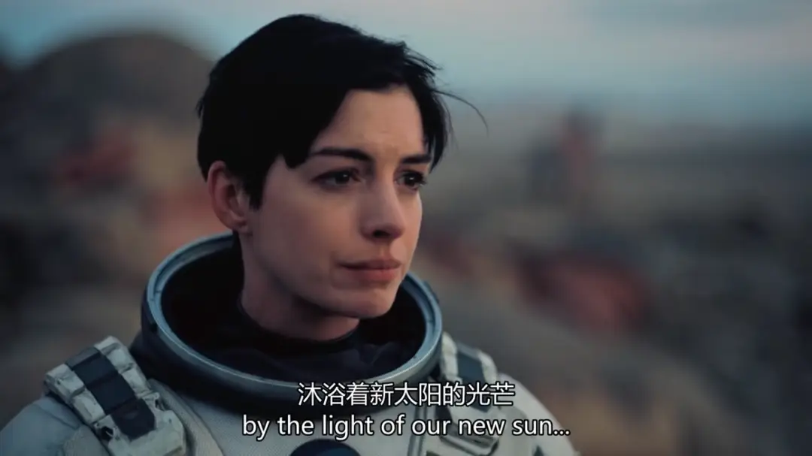
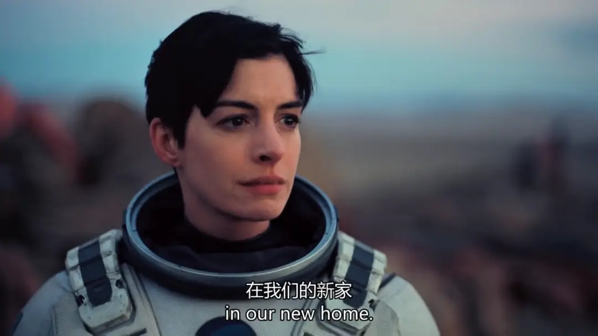
《星际穿越》可以说是一部“硬”科幻，聘请了美国理论物理学家基普·索恩作为科学顾问，电影里涉及到的科学细节也都存在严肃的理论基础。
除了科学的深度，这部作品更具有充沛的情感力量，当中有两个核心的元素，一个是时间，另一个是爱
-01- 时间的断痕
时间，在诺兰的电影里一直都是一个重要的元素。
时间本来是无形的、线性的，诺兰却把时间放到了不同的空间中，拉伸、挤压、切碎，让人感受到一种有形的体验和对比。
在《记忆碎片》里，时间，是一条被切碎后重新拼接的线。
在《盗梦空间》里，时间，是不同梦境中的时差。
在《敦刻尔克》里，时间，是港口的一周，海上的一天，和空中的一小时。
在《星际穿越》里，时间，是世界上最遥远的距离。
库珀和女儿之间的爱，原本像一条纽带，彼此连结。
库珀在出发去宇宙前向女儿告别的时候，和她约定：”等我回来的时候，你就和我是一样大了。“
当库珀执意离开时，父女之间的纽带像被猛然的撕扯，几乎要断裂。
随着空间上的距离越来越远，二人的分离越来越大，纽带被越拉越长，父女二人再也没见过面。
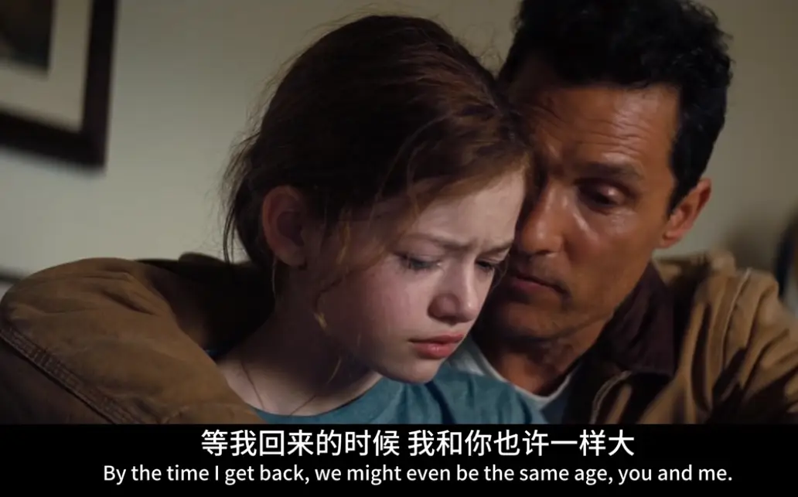
时间，更把这样的分离感放大到震撼人心。
当库珀从“水星”回到飞船上的时候，时间已经过了23年。
儿子已长大成人、恋爱结婚、为人之父，父亲也已去世……
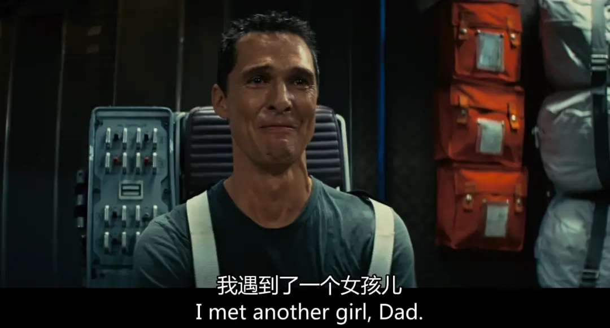
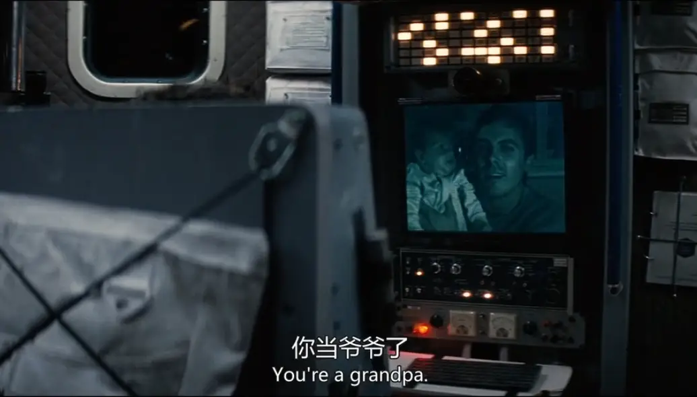
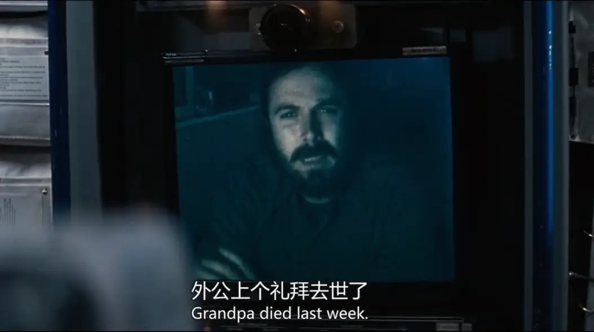
库珀收到了女儿的视频信息，她再次出现在镜头中的时候，已经到了和库珀一样的年纪。
但库珀仍在宇宙深处，遥无归期。
曾经的那个约定，也无法兑现。
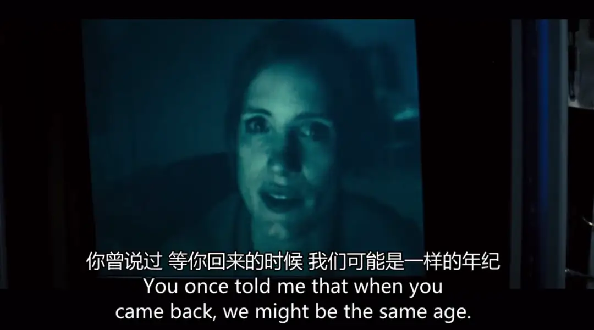
最后，库珀终于和女儿相见，女儿已经到了临终的时刻。
"你曾说，你回来的时候我会和你一样的年纪。但你现在回来了，我却垂垂老矣。"
世界上最遥远的距离，不是光年之外，而是我就在你身边，却隔着永远回不去的时间。
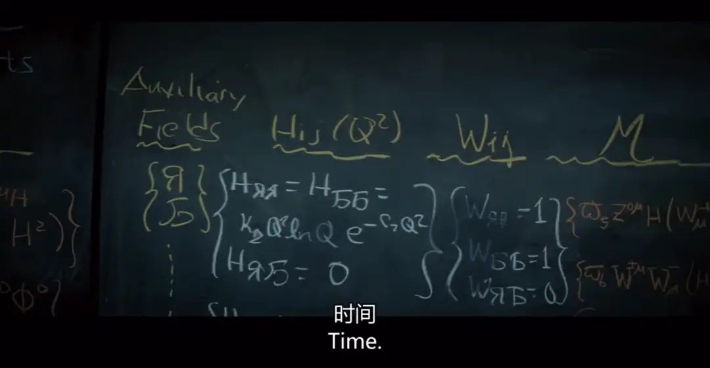
时间，究竟是什么？
老教授谈到时间的时候，他说道：“我不害怕死亡，但我害怕时间。”
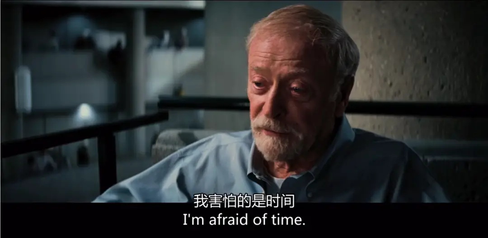
时间，是脸上的皱纹；
时间，是已经不再一样的自己；
时间，是未实现的愿望；
时间，是人无法两次踏进同一条河流；
时间，是世界上最远的距离。
-02- 对抗时间
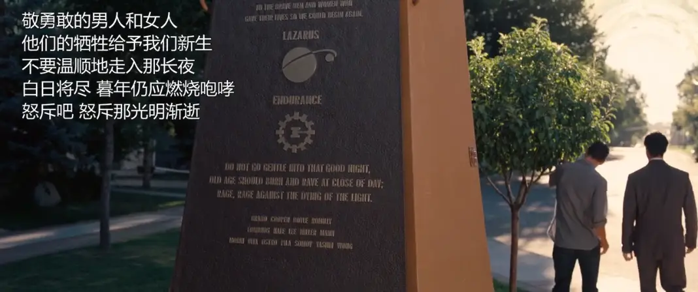
“不要温驯地走入那个长夜
白日将尽 暮年仍应燃烧咆哮
咆哮吧 咆哮 痛斥那光的退缩"
狄兰·托马斯的《不要温驯地走入那个长夜》，是贯穿全片的一首诗。
它很像“我真的还想再活五百年”，寓意着对残酷时间的对抗。
“长夜”代表死亡、或是失去盼望、对现实的妥协。
就算“白日将尽暮年也仍要燃烧咆哮“，这代表着人类一直以来对时间之下死亡和绝望的抗争。
电影中拯救人类的计划之所以起名叫“拉撒路计划”，也是因为“拉撒路”是圣经中一个死而复活的人，以此名字来希望人类能够起死回生。
这也原本是老教授的信念。
但面对生命的尽头，老教授也不得不向现实低头，他从心底里已经对自己曾经的雄心壮志以及人类的未来失去了信心。
他也因此告诉墨菲，他欺骗了库珀和其他宇航员。
这应证了那首诗的后面几句：“智者临终时对黑暗妥协，因为他们的语言已经黯然失色”（另一种翻译）
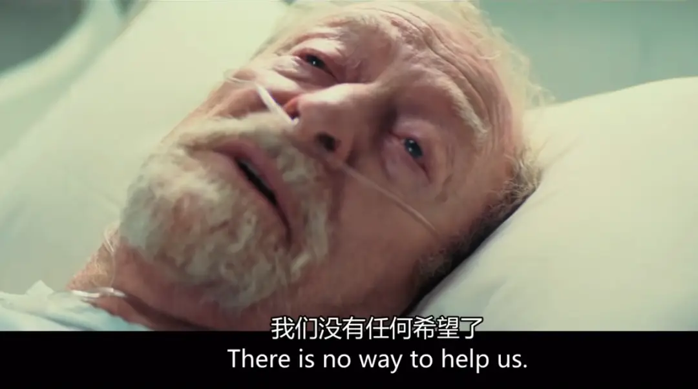
知道真相的时候，墨菲也一度陷入了绝望，父女之间的纽带似乎要断裂。
时间，会让光影流转，让黑夜淹没光明。
时间，也会改变一个人的初心，把曾经的信念磨灭。
时间，让人类不得不低下高傲的头颅。
-03-爱的引力
没有盼望的时间是残酷的，没有情感的理性是冰冷的。
但爱可以让这一切变得丰盈。
布兰德虽然是科学家，但却显得很感性，她相信爱。
而库珀从一开始就是一个唯科学主义者。
当墨菲把家里的怪异现象称作“幽灵”时，库珀告诉她，需要用理论去解释才能得出结论。
当布兰德想要选择恋人所去的数据更好的那颗星球时，库珀坚持选择有持续数据验证的星球。
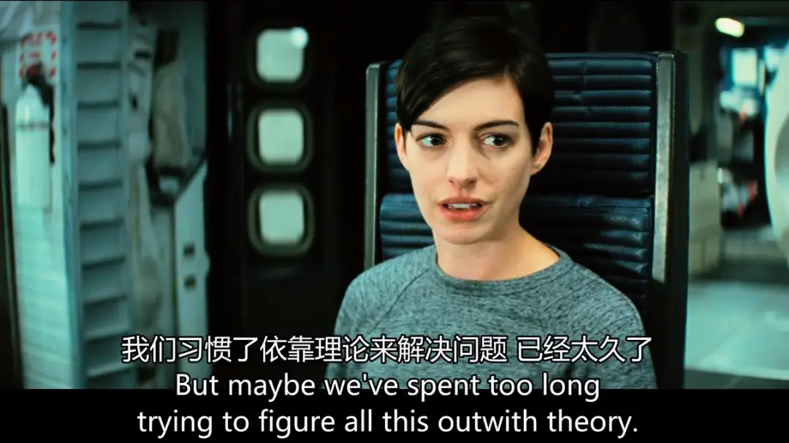
爱是什么？库珀和布兰德就此开展了一番辩论。
布兰德：“爱不是人类发明出来的东西，它一直存在，而且很强大，它是有意义的。”
而库珀：“爱是有意义的，没错，社会效用、人际来往、生儿育女。”
布兰德：“爱一个死去的人，有什么社会效用？我风尘仆仆穿越宇宙，寻找一个消失了10年的人，我也知道他可能死了。”
布兰德：“爱是一种力量，一种我们唯一能够感知的，超越时空的事物。”
最后的结果证明库珀的选择错了。
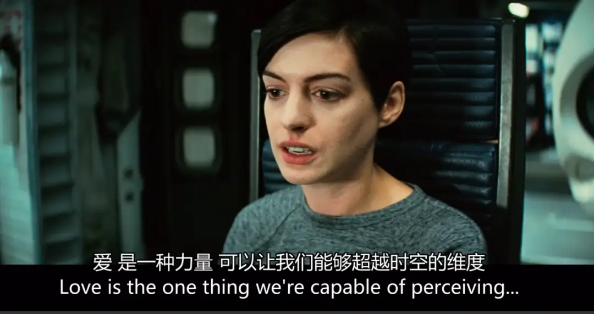
而布兰德对爱的信念影响了库珀，让库珀的理性也重新被爱的光照亮。
所以库珀才能够毅然的抱着失去生命的决心进入黑洞，这已经超越了理性的判断。
这种牺牲的爱，跨越了空间与时间的断痕。
原来父亲便是那个让自己困惑的“幽灵”。
墨菲也因着爱的引力，找到了父亲送给她的那块手表。
自此，父女之间的纽带重新连结。
墨菲获得了黑洞内的数据，最终拯救了人类。
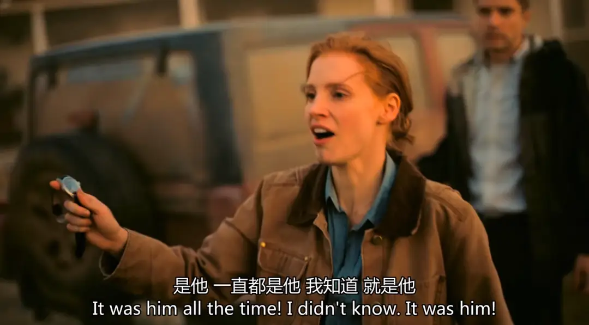
所以，在电影的最后，库珀修复了机器人塔斯后，给它设定的诚实度并不是100%，而是90%。
如果说90%的诚实度代表的是人类的理性，那剩下的10%则代表了人类的感性的部分，这也为人类带来了超越理性的可能性，例如，爱的力量......
电影中对于爱的刻画非常深刻，很多人认为物质决定意识，没有生命就没有爱。
没有丰厚的物质基础，你又有何资格谈论爱？
但这也许只是我们生活在三维空间中的狭隘看法，《星际穿越》站在更高纬度告诉我们，是爱创造了生命，是伟大的情感和意识对世界的发展起了决定性的作用。
这种爱，远超过我们的想象，能跨越时空。
过去，我们人类像戈多一样，在漫长的时间长河里等待，但我们不知道我们在等什么，也不知道能等来什么。
这种等待让我们煎熬，所以，我们会用娱乐、工作来麻痹自己，缓解自己的焦虑。
这部电影则为这份没有尽头的等待给出了答案，那便是爱。
时间，是鸿沟。
但爱是一种引力，一种宇宙创生之力，他能让我们跨越时间的长河。
时间让很多东西变为黑暗。
但爱创造出光明。
时间，能磨平一切棱角。
但爱，又可以重新雕刻出你的模样。
时间，可以让两个人分离。
但爱，可以让两个人再次走到一起。
时间，让人觉得无望。
但那跨越时空来主动寻找你的爱，会让人重新得力。
是爱，是那难以测透的爱。
让时间有了意义。
让我们的等待有了盼望！

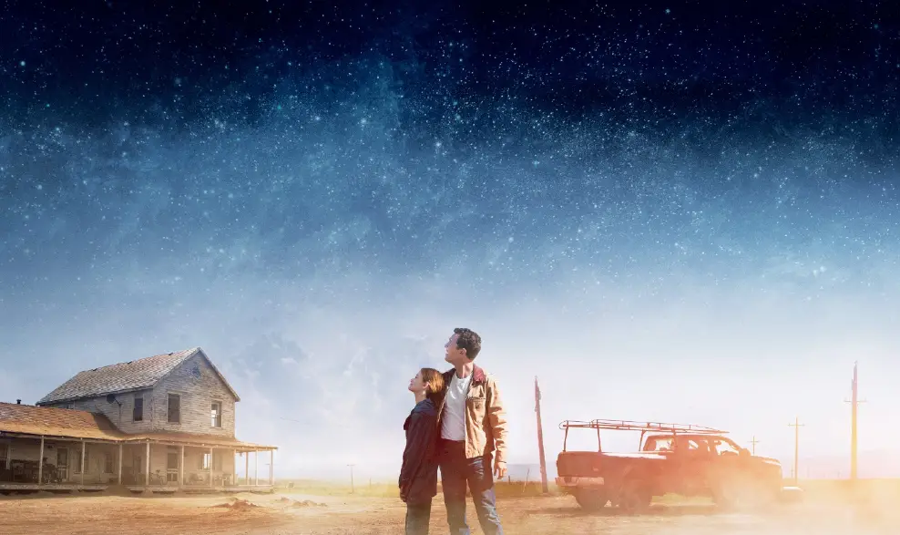
-END-
这里没有挑逗你眼目情欲的小鲜肉
也没有挑动你肉体情欲的段子
更没有膨胀你今生骄傲的鸡血
我们只在乎那些最质朴真诚的作品
在那里我们才能恢复真正的想象力
我们也坚信这才是我们真正需要的

ID:Six_hundred_hits
长按二维码，一键关注
【六百击】
电影评论
尽情分享朋友圈

微信二维码打赏通道